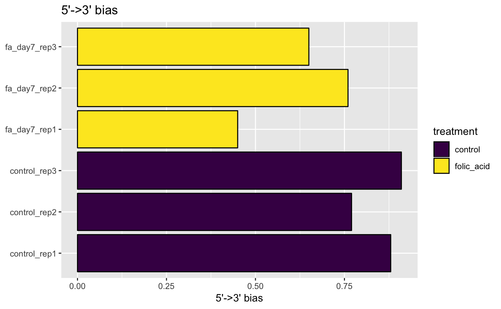

RNA-seq data can have specific biases at either the 5’ or 3’ end of sequenced fragments.
plot5Prime3PrimeBias(object, ...) # S4 method for bcbioRNASeq plot5Prime3PrimeBias( object, interestingGroups = NULL, color = getOption(x = "acid.color.discrete", default = getOption(x = "ggplot2.discrete.colour", default = acidplots::scale_color_synesthesia_d())), labels = list(title = "5'->3' bias", subtitle = NULL, sampleAxis = NULL, metricAxis = "5'->3' bias"), flip = getOption(x = "acid.flip", default = TRUE) )
| object | Object. |
|---|---|
| interestingGroups |
|
| color |
To set the discrete color palette globally, use: options(acid.color.discrete = ggplot2::scale_color_viridis_d()) |
| labels |
|
| flip |
|
| ... | Additional arguments. |
ggplot.
It is common to see a small amount of bias, especially if polyA enrichment was performed, or if there is any sample degradation. If a large amount of bias is observed here, be sure to analyze the samples with a Bioanalyzer and check the RIN scores.
5' (3') bias is generally calculated as the median of the following ratio:
[mean expression of 5' (3')] /
[mean expression of whole transcript]
For example:
Mean expression for 5' (3') is calculated as mean coverage of first (last) 100 bases.
Mean expression of transcript is the mean coverage of all bases in that transcript.
Median is calculated for the representative set of 1000 transcripts.
Updated 2019-09-16.
